Welcome to the directlabels package documentation website, where you can find illustrations of how to use direct labels in common statistical graphics. Furthermore, you can learn how to construct Positioning Functions by looking at the examples.
All the examples on this site should be directly executable in R after installing and loading the directlabels package. To get started, execute this R code:
install.packages(c("ggplot2","ElemStatLearn","mlmRev")) # dependencies and example data
install.packages("directlabels",repos="http://r-forge.r-project.org")
library(directlabels)
| Examples | Positioning Functions | |
| contourplot | 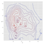 | bottom.points
top.points |
| densityplot | 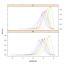 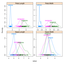 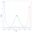 | top.points |
| dotplot | 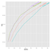 | angled.endpoints |
| lineplot | 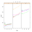 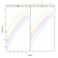 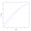 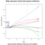 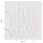 | first.bumpup
first.points first.qp last.bumpup last.points last.qp lines2 maxvar.points |
| scatterplot | 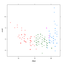 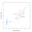 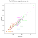 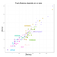 | empty.grid
empty.grid.2 extreme.grid extreme.points follow.points get.means perpendicular.lines smart.grid |
| utility.function | big.boxes
bumpup calc.borders calc.boxes dl.combine dl.indep dl.jitter dl.move dl.trans draw.rects empty.grid.fun enlarge.box in1box inside qp.labels |
| Please send email to Toby Dylan Hocking if you are using directlabels or have ideas to contribute, thanks! |
| Documentation website generated from comments in R source code using inlinedocs. |
| validate |